Drawings stitched in red thread — chandeliers, cars, lamps, hands — layered with translucent silkscreen overlays and installed on the walls of a café in Gent. Exhibition photographs by Stef.
Wide view of the exhibition space with works hung above red benchesCluster of silkscreen prints and translucent orange overlays on a white wall
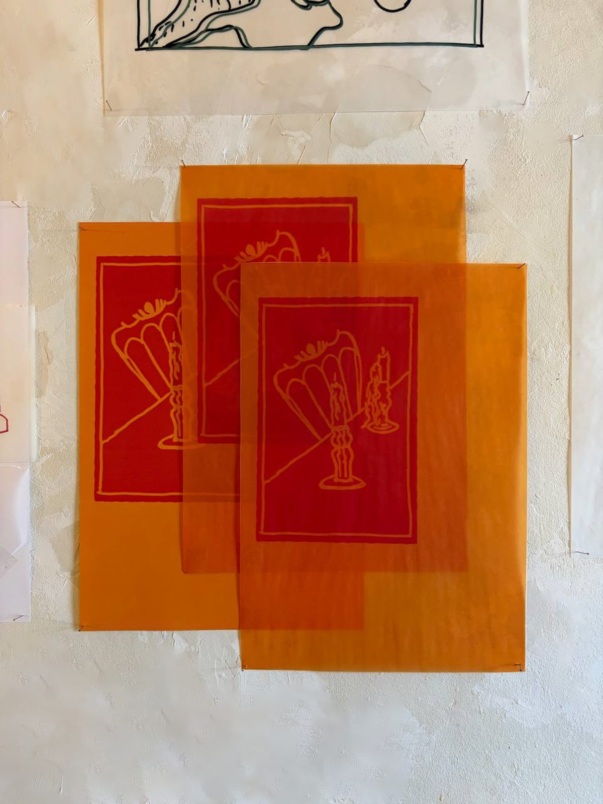
Layered translucent orange and red prints of hands holding tulips
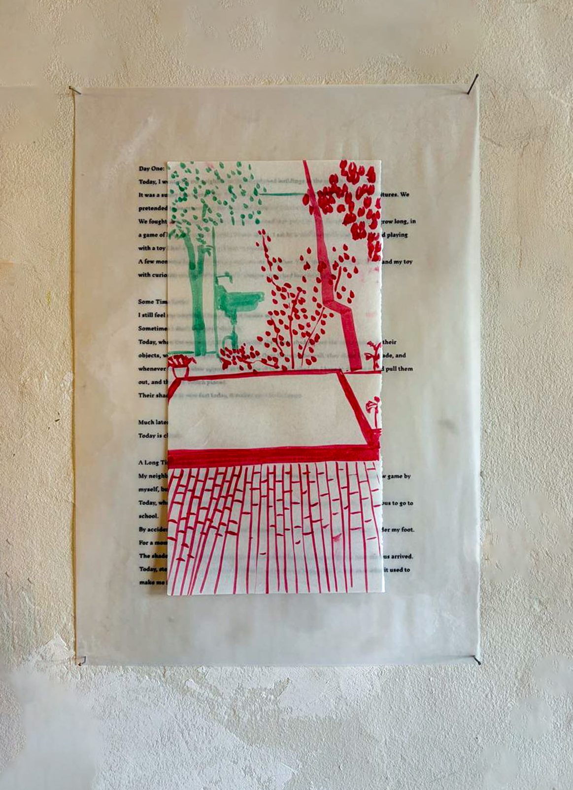
Print combining green stitched text and a red embroidered lamp and tableTranslucent sheet with red and green stitched drawing layered over a poem
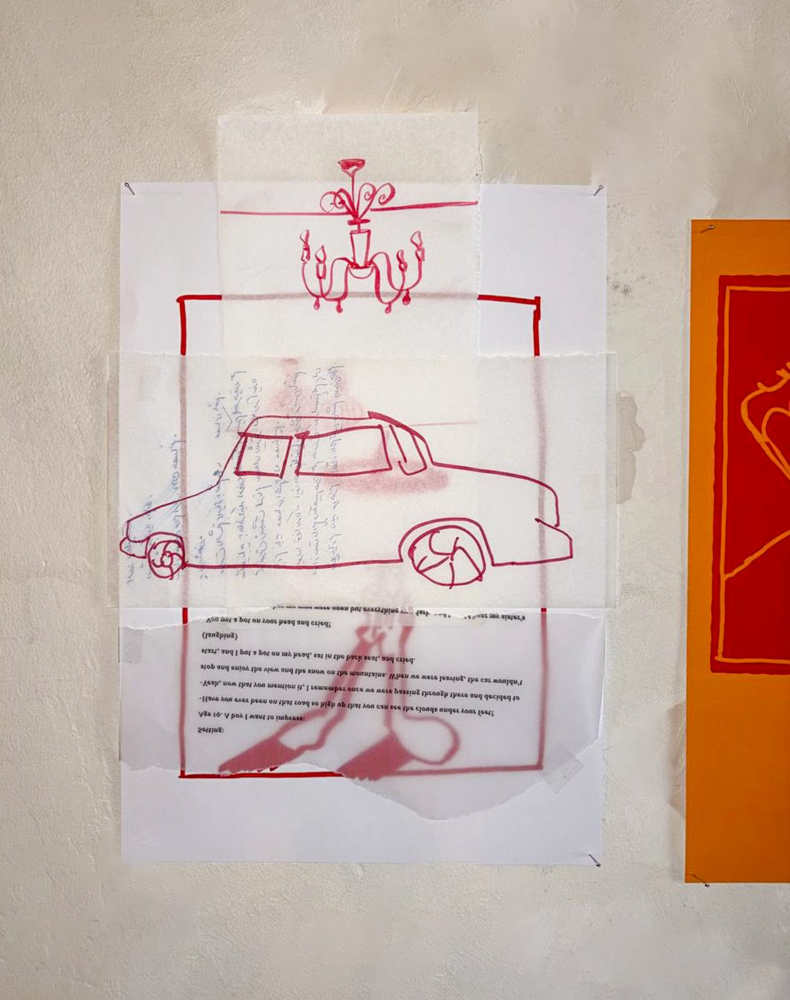
Red stitched drawing of a car with a chandelier above itLarge red and black continuous line drawing with lamps, shelves and shoes
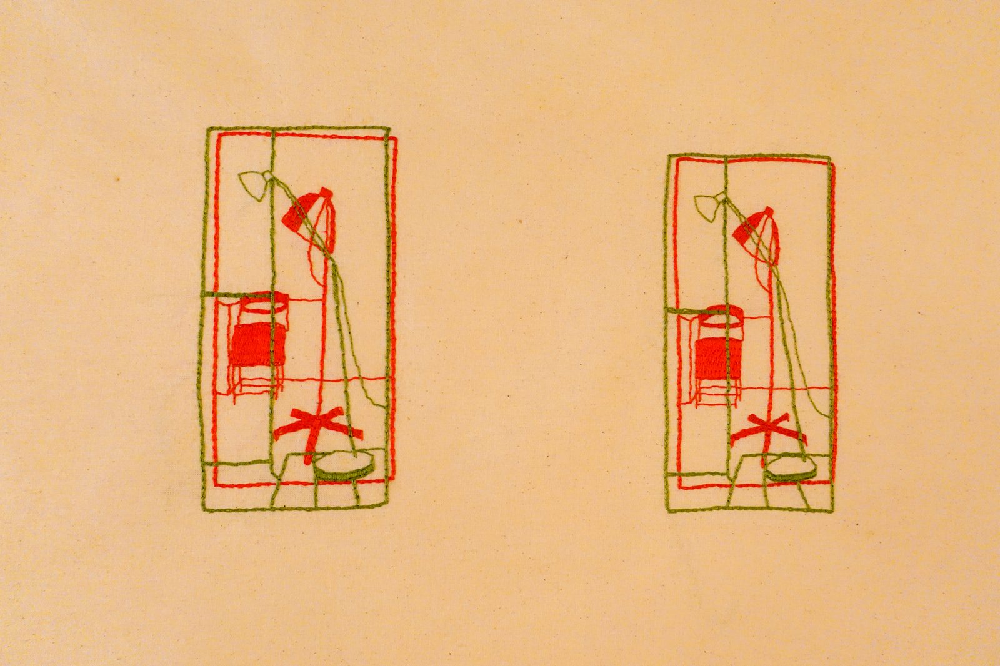
Pair of small green and red stitched drawings side by sideVisitors looking at small framed drawings in the exhibitionVisitor seated by the fireplace beneath a small red work
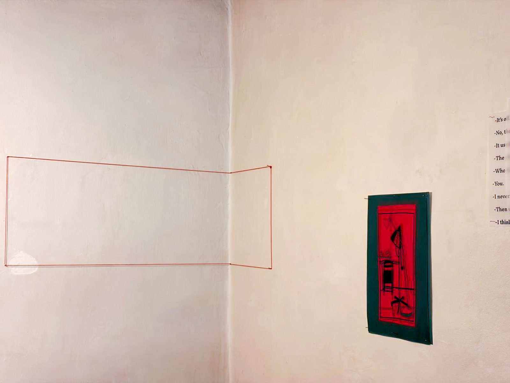
Small red framed work beside an empty stitched outline on the wall
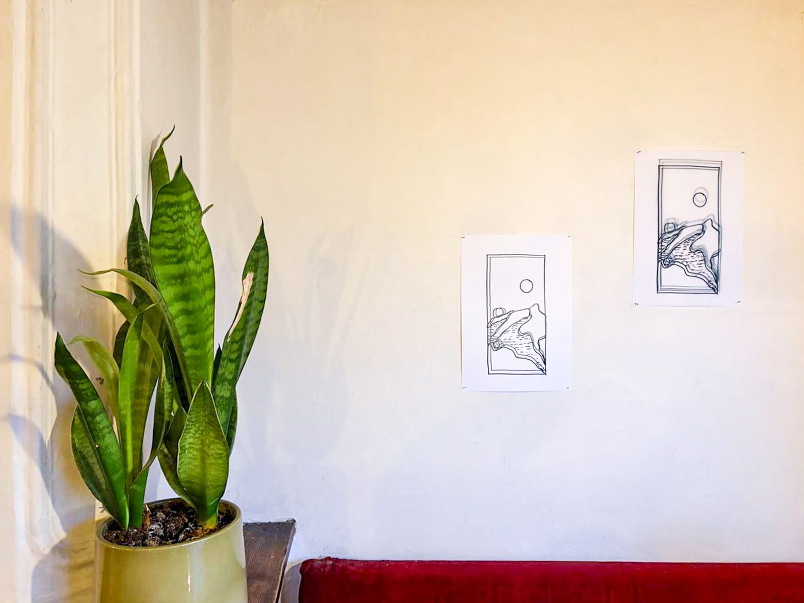
Snake plant in front of two small framed drawingsCluster of prints and orange overlays with a drawing pinned above
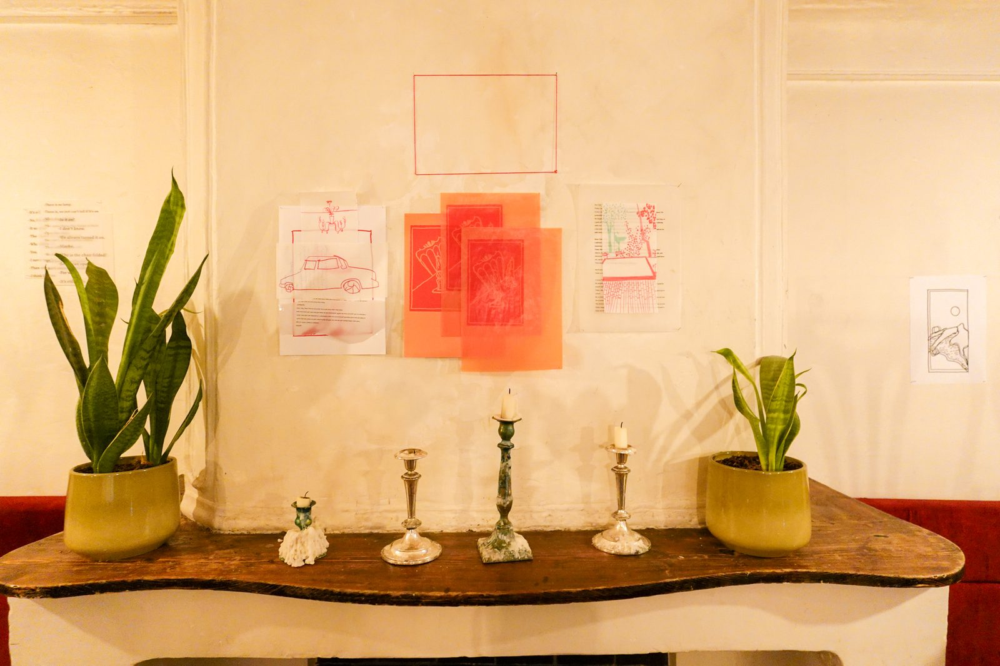
Installation view with candlesticks on a wooden table
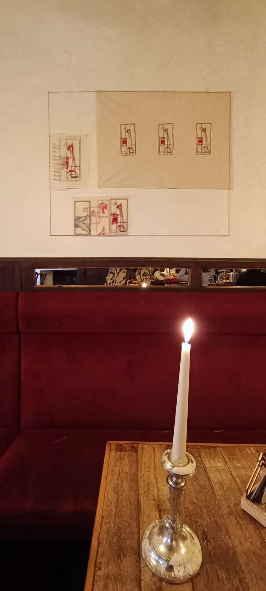
Lit candle on a table in front of the exhibition wallThe artist chatting with a visitor at the exhibition opening
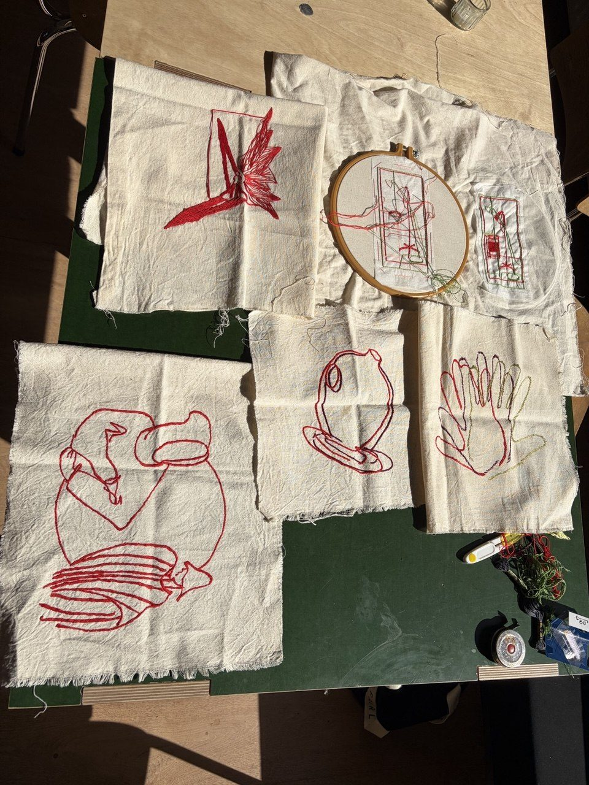
Embroidery hoop and red-thread drawings on white cloth
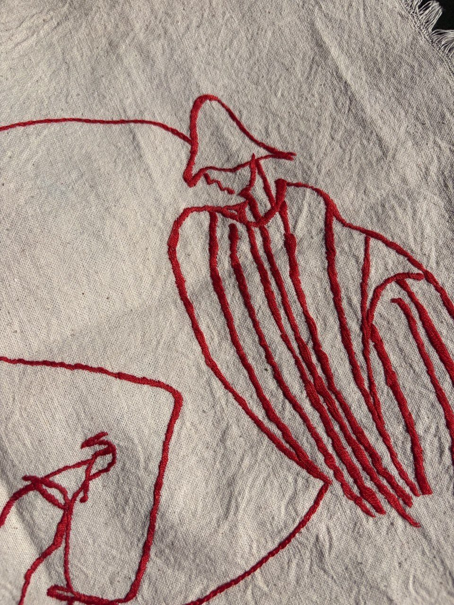
Close-up of a figure embroidered in red thread on white cloth
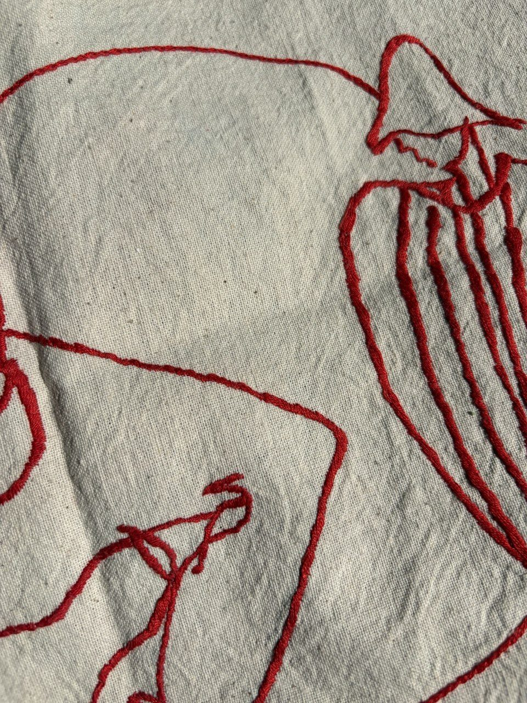
Detail of dense red-thread embroidery forming a robed figureGreen and red stitched print of a lamp pinned to the wall
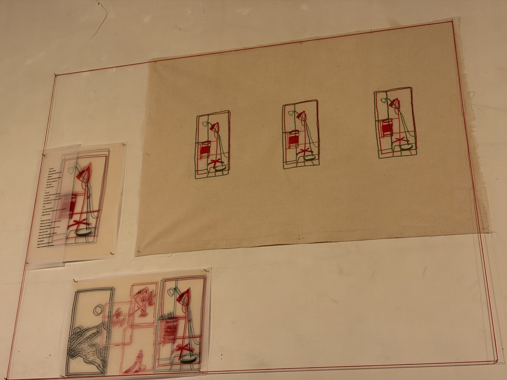
Small stitched drawings arranged flat on beige paper